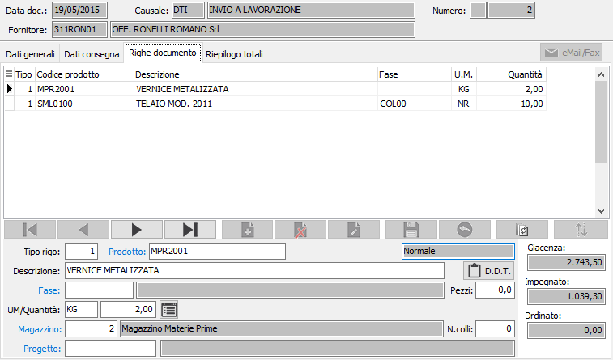
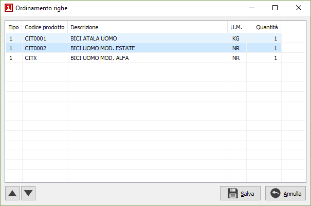

Righe documento
In questa finestra video è possibile inserire le varie righe del Ddt.
Non tutti i campi visualizzati nell’illustrazione seguente sono necessariamente
presenti nell’installazione attiva presso l’utente, dipende dalla configurazione
impostata. La maschera video è articolata su due sezioni: la sezione inferiore
visualizza il pannello di input mentre la griglia della sezione superiore
visualizza le righe inserite.

TIPO RIGO: codice
numerico presente sulla tabella dei tipi rigo utilizzato per definire
il tipo di rigo che si vuole inserire. Se il Ddt evade gli ordini
è possibile richiamare la finestra di selezione degli ordini tramite il
tasto F12. Sul campo sono attive le funzioni di ricerca (F9). Di fianco
al prodotto,c'è l'indicazione della tipologia del rigo che può essere
Normale oppure Dettaglio
ordine terzista; nel caso un rigo derivi da un ordine, viene riportato
nel documento anche il dettaglio dei componenti riconoscibili dalla tipologia.
PRODOTTO: campo alfanumerico
per inserire il codice dell’articolo che si intende utilizzare. Il campo
è attivo solo per i tipi di rigo che prevedono l'accesso al prodotto.
Sul campo sono attive le funzioni di ricerca (F9) ed accesso rapido alla
tabella (CTRL+W). Tramite il tasto funzione F11 si può accedere alla
finestra relativa alla Selezione
descrizioni prodotti.
DESCRIZIONE: campo
alfanumerico di 60 caratteri per descrivere il prodotto. In caso di articoli
codificati, il campo viene compilato automaticamente con la descrizione
dell’articolo in esame, che è tuttavia modificabile a cura dell’utente.
NOTE D.D.T.: bottone
che abilita un campo annotazioni, relative al rigo di documento attivo,
che verranno stampate sul documento.
FASE: codice della
fase di lavorazione del prodotto; la fase deve essere presente nel ciclo
di lavorazione del prodotto. Sul campo sono attive le funzioni di ricerca
(F9) ed accesso rapido alla tabella (CTRL+W).
PEZZI: campo numerico
che indica il numero dei pezzi dell’ articolo, è presente solo se attivo
da configurazione.
UNITÀ DI MISURA: campo
alfanumerico di 3 caratteri, presente nella tabella Unità di misura, per
descrivere l’unità di misura del prodotto. Per gli articoli codificati
viene presentata automaticamente la prima unità di misura presente in
anagrafica. L’unità di misura può essere modificata dall’utente, ma per
gli articoli codificati vengono accettati solo i codici delle unità di
misura presenti in anagrafica articolo. Se viene specificata la seconda
o la terza unità di misura presente in anagrafica articoli, l’ordinato
a fornitori viene calcolato in funzione del fattore di conversione relativo.
Sul campo sono attive le funzioni di ricerca (F9) ed accesso rapido alla
tabella (CTRL+W). Tramite il tasto funzione F11 si può accedere alla finestra
relativa al fattore di conversione. Tramite
il tasto funzione F12 si può accedere alla finestra relativa alla selezione
di una unità di misura con conversione della quantità; tramite i tasti
CTRL+F12 si può accedere alla finestra relativa alla conversione
di una unità di misura all'unità di misura del documento.
QUANTITÀ: campo numerico
per inserire la quantità per l'articolo/fase attivo. Se attiva la gestione
del dettaglio quantità per questo documento, è presente il bottone dettaglio,
a destra del campo, tramite il quale sarà visualizzata la relativa finestra
di dettaglio
quantità; l'attivazione della finestra avviene comunque in automatico
al momento dell'accesso al campo quantità.
MAGAZZINO: codice
del magazzino aziendale da cui deve essere prelevata la merce. Viene proposto
il magazzino presente in configurazione. Sul campo sono attive le funzioni
di ricerca (F9) ed accesso rapido alla tabella (CTRL+W).
CODICE PROGETTO: Codice
alfanumerico di 15 caratteri che definisce il progetto di riferimento.
Sul campo sono attive le funzioni di ricerca (F9) ed accesso diretto alla
tabella (CTRL+W). Il campo è presente solo se attiva la gestione progetti
in configurazione del conto lavoro.
Nella finestra video è possibile scorrere i righi di documento, visualizzando
quello attivo nel pannello di input, tramite i tasti CTRL+freccia
giù e CTRL+freccia su.
Un rigo di documento visualizzato nel pannello di input può essere eliminato,
ancorchè privo di trattamenti successivi, premendo il bottone Elimina
della barra strumenti del pannello di input; è possibile inserire un rigo
vuoto immediatamente successivo al rigo attivo premendo il bottone Nuovo
della barra strumenti del pannello di input.
 Tramite il pulsante Ordina è possibile modificare
l'ordinamento delle righe del documento spostandole singolarmente tramite
gli appositi tasti di scorrimento oppure selezionando e trascinando le
singole righe. La pressione sul pulsante Salva determina la modifica effettiva
dell'ordinamento.
Tramite il pulsante Ordina è possibile modificare
l'ordinamento delle righe del documento spostandole singolarmente tramite
gli appositi tasti di scorrimento oppure selezionando e trascinando le
singole righe. La pressione sul pulsante Salva determina la modifica effettiva
dell'ordinamento.



|
Se attiva
la gestione matricole sarà possibile accedere dal singolo rigo/dettaglio
alla finestra delle matricole
tramite il pulsante sul rigo o tramite il pulsante Matricole in
alto con cui si accede alla finestra di gestione
massiva. |